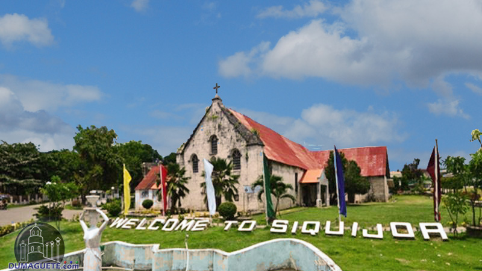

S I Q U I J O R

Siquijor, officially the Municipality of Siquijor, is a 4th class municipality and capital of the province of Siquijor, Philippines. According to the 2020 census, it has a population of 28,915 people.
Siquijor (/ˌsɪkiˈhɔːr/ SIK-ee-HOR, Tagalog: [sɪkɪˈhɔɾ]), officially the Province of Siquijor (Cebuano: Lalawigan sa Siquijor; Tagalog: Lalawigan ng Siquijor), is an island province in the Philippines located in the Central Visayas region. Its capital is the municipality also named Siquijor. To the north of Siquijor is Cebu, to the west is Negros, northeast is Bohol, and to the south, across the Bohol Sea, is Mindanao.
During the Spanish colonial period of the Philippines, the Spaniards called the island Isla del Fuego (Island of Fire). Siquijor is commonly associated with mystic traditions that the island's growing tourism industry capitalizes on.